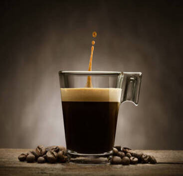
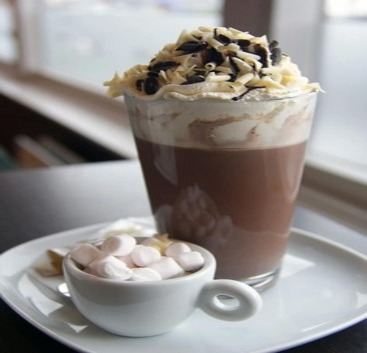
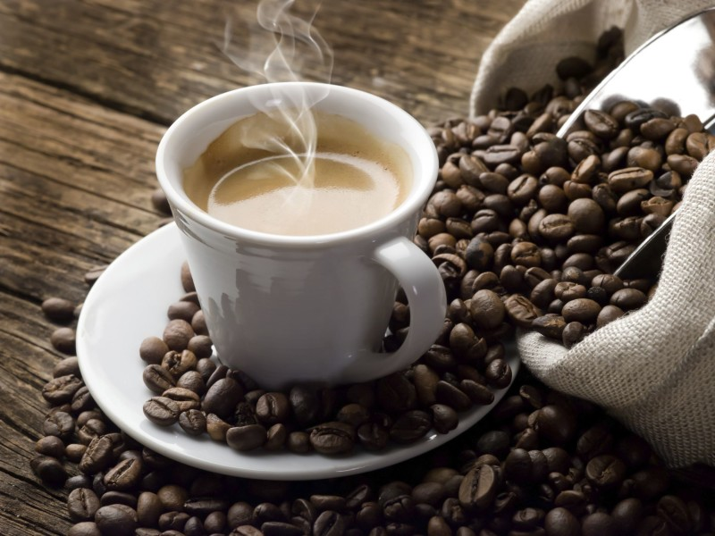

Conoce todos los beneficios del Cafe

El café es uno de los productos más comercializados en el mundo y una de las bebidas más populares y consumidas en el mundo junto al té y al agua. Esta bebida, que se obtiene al tostar y moler los granos del fruto del cafeto o planta del café, es bastante estimulante debido a su contenido en cafeína, una sustancia psicoactiva. Este producto es una de las bebidas no alcohólicas más sociales en el mundo.
¿Pero beber café es bueno para ti?. Pues tenemos buenas noticias. Muchos estudio indican que podrías estar obteniendo más beneficios de tu bebida favorita de lo que pensabas. El café está repleto de sustancias que pueden ayudar a protegerte, incluyendo la enfermedad de Alzheimer y las enfermedades cardíacas.
Leer más
Como preparar un buen Cafe

Hay muchas formas de preparar un café de calidad, dependiendo de las costumbres de cada cultura, de la cafetera que se utilice y de los gustos personales. Está claro que tener una buena máquina es un primer paso importante, y podemos invertir todo el presupuesto que queramos permitirnos, pero no es lo único a tener en cuenta. De hecho, nuestro país está lleno de cafeterías plagadas de maquinaria profesional de las que salen bebidas que son más purgantes que cafés. ¡Que no os pase lo mismo en casa!
Leer más
Historia del Cafe

El café es la bebida que se obtiene a partir de los granos tostados y molidos de los frutos de la planta del café; es altamente estimulante por su contenido de cafeína, una sustancia psicoactiva. Este producto es uno de los más comercializados del mundo y una de las tres bebidas más consumidas del mundo.
Leer más